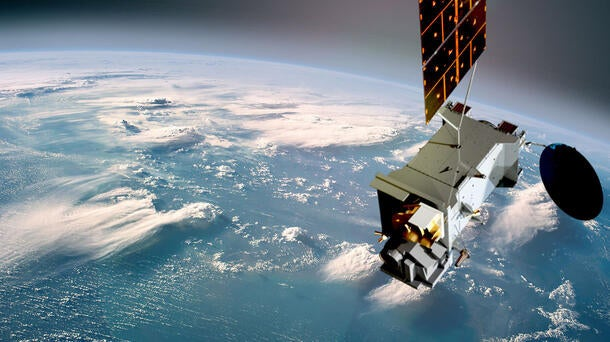

The Story of Space Weather
Discover how solar winds, geomagnetic storms, and cosmic rays shape our technological world and create stunning auroras.
Solar Flares & Coronal Mass Ejections
The Sun constantly emits energy in the form of light and particles. Occasionally, it releases massive bursts called solar flares and coronal mass ejections (CMEs).
- Solar flares can reach temperatures of millions of degrees in minutes
- A single CME can contain billions of tons of plasma moving at 3 million mph
- X-class flares are the most intense and can affect radio communications

Effects on Earth
Disrupted Communications
Solar storms can interfere with radio signals, GPS systems, and satellite communications.
Auroras
Charged particles create spectacular light shows near Earth's poles when they interact with our atmosphere.
Power Grids
Geomagnetic storms can induce currents that overload power transformers and cause blackouts.
Tracking Space Weather
Scientists monitor the Sun 24/7 using satellites like SOHO and DSCOVR to predict space weather events.
Current Solar Activity
Moderate
